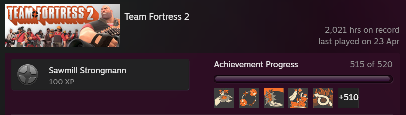
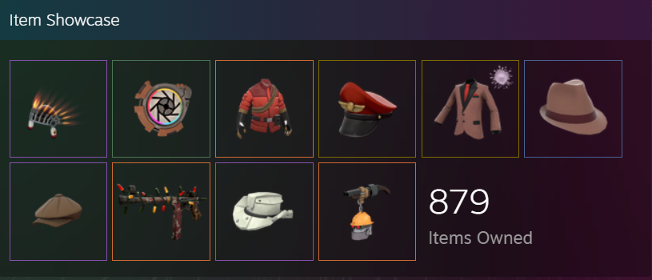

Why am I doing this?
Team Fortress 2 came out in 2007, I was only 5 years of age. I first got into Team Fortress 2 when I was 8, that was 2010, September when "The Mann-Conomy" released. Me and my brother had previously enjoyed watching youtubers playing Team Fortress 2, the community from then has not changed much, for better or worse
I personally have roughly 2,500 hours in Team Fortress, partially from my brothers account from before I had one, and from the Orange box version on the Playstation 3. I've seen many iconic figures in that game come and go, and many I even got lucky enough to play with or against. Those memories don't leave me.
The current state of Team fotress 2, although still kept alive by it's community, it's life-blood, is for lack of a better word, abandoned by it's creator for questionable to asinine goals. While they do such, Teamfortress continues to be their biggest income, and nothing will top that, but as they abadoned the game, a problem emerges, Bots, Scammers, and Hackers, and with Valve not paying any attention, they run rampant and ruin it all for others, and the community, it does it's best to fight back.
I may have made this site jokingly, but I do love Team Fortress 2, it's a big part of my life, and a big reason why I'm in this course currently, I want to some day make a game like it, not to beat it, but to show respect to such a staple game, iconic to the gaming world.
| Hours | Items |
|---|---|
|  |  |